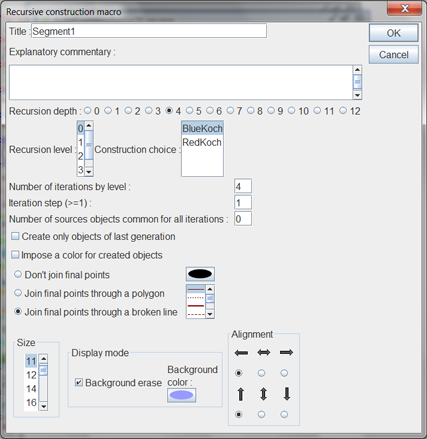

Example of a recursive construction to create a Von Koch flake.
A construction is called implemented in an recursive way when it calls itself on several depths of field.
We will first create the construction that will be implemented in a recursive way afterwards.
Create a new empty figure et make sure that the angle unity of the figure is the degree (menu item Options - Current figure).
We will start from two free points called A and B (icon  ).
).
The first final point of ou construction will be a clone of point A. For this, use menu item Create - Object clone.
The second final point will be on the first third of segment [AB] from A. For this use  icon. Click first on A (dilation center, choose the clone point but it is not important). In the dialog box, enter 1/3 for ratio then click on point B. We will name this new point D.
icon. Click first on A (dilation center, choose the clone point but it is not important). In the dialog box, enter 1/3 for ratio then click on point B. We will name this new point D.
Now create the image of A clone trough the rotation of center C and angle - 120° (icon  ). We will name it D.
). We will name it D.
Then create the midpoint of segment [CB] (icon  ). We will call it E.
). We will call it E.
To end create a clone of point B with menu item Create- Object clone.
Use now the polygon tool  . Click on points C, D and E then right click to close the polygon.
. Click on points C, D and E then right click to close the polygon.
In the color palette, select the blue color. Click on icon  of surface creation then click on the polygon. Now mask the polygon (tool
of surface creation then click on the polygon. Now mask the polygon (tool  ).
).
We are now ready to create the construction. This one will contain only graphical objects.
Use menu item Constructions - Sources objects choice - Graphical. Click, in that order, on A and B (the free points) then right click to end.
Now we have to choose the final objects. They will all be graphical.
Use menu item Constructions - Final objects choice - Graphical. Click on clone of point A, point C, point D, point E, clone of point B and the surface.
Before finishing our construction, we are going to hide the final points created. Use icon to hide A clone, C, D and E points and B clone.
Now use menu Constructions - Finish current construction.
Name this construction BlueKoch.
Now get the red color activated in the color palette and use icon  to change the color of the surface.
to change the color of the surface.
Use tool  to get again visible A clone, points C, D and E and B clone.
to get again visible A clone, points C, D and E and B clone.
Start again the preceeding complete procedure to create a construction named RedKoch (don't forget to mask the five final points before finishing the construction).

With menu item Constructions - Save construction of figure to file, save the the two constructions BlueKoch and RedKoch on your computer (please note the place you save them to).
Now we are going to create a macro that will implement this construction in a recursive way in a new figure.
Create a new figure (with degree for angle unity).
Use menu item Constructions - Incorporate a figure from file and incorporate the two constructions previously saved on your computer.
Create two free points we will call A and B then use tool  to create a direct equilateral triangle. Name the new point C.
to create a direct equilateral triangle. Name the new point C.
Now use menu item Macros - New macro - Construction macro - Recursive.
Fill in the dialog box as below.
Clicking in the list of recursion levels, assign alternatively the constructions BlueKoch and RedKoch to levels 0, 1, 2, 3 and 4.
Set the checkbox Join the final points through a broken line checked.

Once the dialog box filled in, click on point B then A (in that order).
In the same way, create a second macro of recursive construction named Segment2 doing the same thing for points A and C, then a third one named Segment3 applied to points C and B.
Save your figure in a file (before executing the macros).
You can now execute the macros to verify they run in a correct manner but don't forget to undo before saving the figure to a file, because, once the macros executed, the figure contains thousands of objects and, saved in a file, will produce a very big file.
Let us now explain how to get the three macros executed after loading the file.
First it is better to save the figure in a new file on disk.
Use menu item Macros - New macro - Macro sequence execution and create a macro launching the three macros Segment1, Segment2 and Segment3. Give this macro the name Start for example.
Then use menu item Options - Current figure, click on Starting macro tab and select our Start macro.
Save again this figure.
When you will open this figure next time, this macro will be launched on start and the Koch flake will appear.
But be careful : If you save again this figure, the obtained file will be very big on disks because, once the macro executed, the figure contains several thousands of objects.

To be noted : It is also possible to implement directly a construction in a recursive way without using a macro using menu item Construction - Implement a construction in recursive way.
Explanations : See the topmost figure for the notations.
The construction is first applied on level 0 : five points are created plus the surface. Then the construction is applied for A clone and C, then points C and D, then D and E then E and B clone. But, on each call, the construction calls itself four times for the created points and so on until the max depth of recursion is reached.
The iteration step is 1 because, once the construction called for instance with A clone and C, it is the called for C ad D and so on. So one final oject is skipped before calling again the contruction and this four times. The number of iterations for each level is therefore 4.
As we decided, the points created at the maximum depth of recursion are joined together through a broken line.
Created with the Personal Edition of HelpNDoc: Easily create HTML Help documents